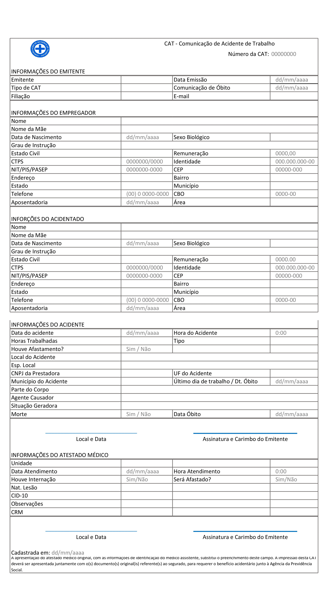

Comunicação de Acidente de Trabalho - ProSafe
Projeto Integrador do Grupo 2 da Turma 060 do curso Técnico de Informática, abrangendo a disciplina UC13 (Execução de codificação, manutenção e documentação de aplicativos para internet). O objetivo é desenvolver um site e um aplicativo web para o registro de Comunicação de Acidente de Trabalho (CAT), inspirado no modelo disponível na página do GOV.BR
Registrar Comunicação de Acidente de Trabalho - CAT
Avaliação:
Sem Avaliação
Avaliação:
Sem Avaliação